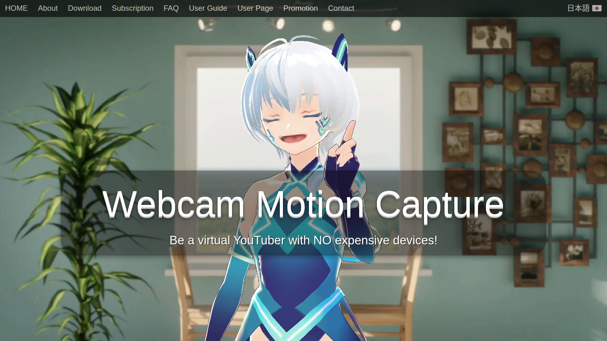

> 調研日期：2026-06-19
> 官網：https://webcammotioncapture.info
VTuber 專用 AI 追蹤軟體，追蹤頭部/臉部/眼球/嘴唇/上半身/手指。支援 Perfect Sync（ARKit 52 表情）和 iPhone Face ID。

付費軟體
🔵 低優先級 — VTuber 專用，不產出遊戲動畫格式。
MotionLab Research · 2026-06-19